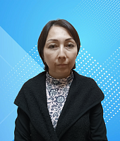
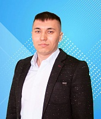

Муниципальное бюджетное учреждение культуры «Централизованная библиотечная система г. Салехард
- Центральная библиотека имени Р.П. Ругина
- Модельная библиотека «Точка»
- Библиотека Дружбы народов
- Библиотека «Культурный центр «Наследие»
Сотрудники
| Фотография | ФИО | Библиотека | Должность | Контактная информация |
|---|---|---|---|---|
 |
Нурмурадова Алена Валерьевна | Центральная библиотека имени Р.П. Ругина | Заместитель директора | +7 (34922) 4-19-01 |
| Орлов Максим Владимирович | Центральная библиотека имени Р.П. Ругина | Начальник отдела обеспечения деятельности | +7 (34922) 3-08-94 | |
 |
Серасхова Марина Евгеньевна | Центральная библиотека имени Р.П. Ругина | Специалист по кадрам | +7 (34922) 3-08-94 |
|  | Аширбаева Люция Нуримановна | Центральная библиотека имени Р.П. Ругина | Документовед отдела обеспечения деятельности | +7 (34922) 3-08-94 |
|  | Урасбактеев Самат Маратович | Центральная библиотека имени Р.П. Ругина | Контрактный управляющий | +7 (34922) 3-08-94 |
 |
Серова Татьяна Валентиновна | Центральная библиотека имени Р.П. Ругина | Юрисконсульт | +7 (34922) 3-08-94 |
 |
Долженко Марина Юрьевна | Центральная библиотека имени Р.П. Ругина | Заведующий отделом фондов и каталогов | +7 (34922) 3-36-99 |
 |
Канева Наталья Александровна | Центральная библиотека имени Р.П. Ругина | Главный библиотекарь-каталогизатор отдела фондов и каталогов | +7 (34922) 3-36-99 |
 |
Азбукина Светлана Владимировна | Центральная библиотека имени Р.П. Ругина | Библиотекарь-комплектатор отдела фондов и каталогов | +7 (34922) 3-36-99 |
 |
Юдин Антон Евгеньевич | Центральная библиотека имени Р.П. Ругина | Заведующий отделом рекламы и продвижения | +7 (34922) 4-02-50 |
 |
Авдеева Ирина Михайловна | Центральная библиотека имени Р.П. Ругина | Библиотекарь отдела рекламы и продвижения | +7 (34922) 4-02-50 |
 |
Хаитова Анастасия Павловна | Центральная библиотека имени Р.П. Ругина | Библиотекарь отдела рекламы и продвижения | +7 (34922) 4-02-50 |
 |
Анисимова Елена Николаевна | Центральная библиотека имени Р.П. Ругина | Заведующий отделом мониторинга и развития библиотечной деятельности | +7(34922) 4-49-14 |
 |
Кульмаметова Людмила Александровна | Центральная библиотека имени Р.П. Ругина | Главный методист отдела мониторинга и развития библиотечной деятельности | +7 (34922) 4-49-14 |
 |
Климитенко Наталья Геннадьевна | Центральная библиотека имени Р.П. Ругина | Методист отдела мониторинга и развития библиотечной деятельности | +7 (34922) 4-49-14 |
 |
Мехонцева Марина Владимировна | Центральная библиотека имени Р.П. Ругина | Начальник отдела информационных технологий | +7(34922) 3-01-19 |
 |
Костюнин Денис Сергеевич | Центральная библиотека имени Р.П. Ругина | Программист отдела информационных технологий | +7(34922) 3-01-19 |
 |
Коробейников Никита Евгеньевич | Центральная библиотека имени Р.П. Ругина | Администратор баз данных отдела информационных технологий | +7 (34922) 3-36-99 |
 |
Степанова Екатерина Олеговна | Центральная библиотека имени Р.П. Ругина | Заведующий отделом художественной литературы | +7 (34922) 3-36-99 |
 |
Казакова Вероника Николаевна | Центральная библиотека имени Р.П. Ругина | Библиотекарь отдела художественной литературы | +7(34922) 3-13-94 |
 |
Енова Юлия Анатольевна | Центральная библиотека имени Р.П. Ругина | Главный библиотекарь отдела художественной литературы | +7(34922) 3-13-94 |
 |
Гвоздева Ангелина Васильевна | Центральная библиотека имени Р.П. Ругина | Библиотекарь отдела художественной литературы | +7(34922) 3-13-94 |
 |
Морозова Марина Владимировна | Центральная библиотека имени Р.П. Ругина | Библиотекарь отдела отраслевой литературы | +7(34922) 3-13-94 |
 |
Сюлись Екатерина Павловна | Библиотека "Культурный центр "Наследие" | Заведующий отделом отраслевой литературы | +7 (34922) 3-11-02 |
 |
Исакова Эльвира Раульевна | Библиотека "Культурный центр "Наследие" | Главный библиотекарь отдела отраслевой литературы | +7(34922) 3-11-02 |
 |
Рыкова Наталья Владимировна | Библиотека "Культурный центр "Наследие" | Руководитель библиотеки "Культурный центр "Наследие" | +7(34922) 3-11-02 |
 |
Гудкова Полина Евгеньевна | Библиотека "Культурный центр "Наследие" | Библиотекарь библиотеки "Культурный центр "Наследие" | +7(34922) 3-11-02 |
 |
Алыкова Динара Аллямовна | Библиотека "Культурный центр "Наследие" | Главный библиотекарь библиотеки "Культурный центр "Наследие" | +7(34922) 3-11-02 |
 |
Китаева Александра Сергеевна | Библиотека "Культурный центр "Наследие" | Библиотекарь библиотеки "Культурный центр "Наследие" | +7(34922) 3-11-02 |
 |
Куленцова Наталья Александровна | Модельная библиотека "Точка" | Руководитель библиотеки "Модельная библиотека "Точка" | +7 (34922) 4-61-31 |
 |
Третьякова Людмила Викторовна | Модельная библиотека "Точка" | Главный библиотекарь Модельной библиотеки "Точка" | +7 (34922) 4-61-30 |
 |
Омеиц Татьяна Юрьевна | Модельная библиотека "Точка" | Библиотекарь Модельной библиотеки "Точка" | +7 (34922) 4-61-31 |
 |
Ведерникова Лариса Александровна | Модельная библиотека "Точка" | Библиотекарь Модельной библиотеки "Точка" | +7 (34922) 4-61-31 |
 |
Бейсова Клавдия Валерьевна | Модельная библиотека "Точка" | Библиотекарь Модельной библиотеки "Точка" | +7 (34922) 4-61-31 |
 |
Дворяшина Анастасия Александровна | Модельная библиотека "Точка" | Библиотекарь Модельной библиотеки "Точка" | +7 (34922) 4-61-31 |
 |
Кузьменкова Марина Владимировна | Библиотека Дружбы народов | Заведующий библиотекой "Библиотека Дружбы народов" | +7 (34922) 4-35-54 |
 |
Акчурина Лиана Рашитовна | Библиотека Дружбы народов | Библиотекарь Библиотеки Дружбы народов | +7 (34922) 4-35-54 |
 |
Канева Екатерина Викторовна | Библиотека Дружбы народов | Библиотекарь Библиотеки Дружбы народов | +7 (34922) 4-35-54 |
 |
Слинкина Елена Валерьевна | Библиотека Дружбы народов | Главный библиотекарь "Библиотека Дружбы народов" | +7 (34922) 4-35-54 |